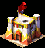
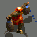
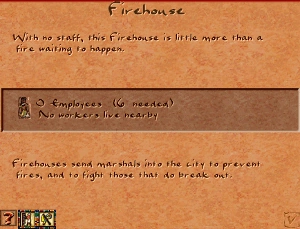

Firehouse

The Firehouse is the city's primary defence against fire. It dispatches roaming Fire Marshals who patrol the road network and reduce the fire risk of every building they pass. Should a fire break out nearby, the Fire Marshal immediately abandons his patrol and rushes to extinguish the flames.
Fire is one of the most destructive hazards in the game — it spreads rapidly to adjacent buildings and can consume whole city blocks if left unchecked. Industrial buildings and poorly-staffed housing are the most vulnerable; certain buildings such as scribal schools and libraries increase their fire risk especially quickly.
Ironically, Firehouses themselves are susceptible to fire, though this is never a practical problem as long as the building is properly staffed. Citizens are somewhat reluctant to live next to one — the Firehouse carries a minor negative desirability effect.
Stats
- Cost (Normal)
- 25 Db
- Cost by difficulty
- VE 6 · Easy 12 · Normal 25 · Hard 40 · VH 60
- Labor category
- Infrastructure
- Fire risk
- None (fireproof)
- Damage risk
- Low
- Overlay
- Fire F
Overview
Fire was an ever-present danger in ancient urban settlements built from wood, reed matting, and dried mud brick. Dense residential districts — where cooking fires and oil lamps were in constant use — could ignite quickly and burn for hours. Egyptian cities, like their Roman counterparts, maintained organised fire-watch services to patrol the streets and respond to outbreaks before they spread.
In the game, the Firehouse models this as a roaming service: Fire Marshals walk circuits through the street network, passively lowering risk as they go. The building itself animates when staffed, showing activity inside. The Fire overlay (hotkey F) is the most useful tool for planning Firehouse placement — it highlights dangerous buildings in red and shows the active patrol routes.
Mechanics
Fire Marshal
The Firehouse sends out one Fire Marshal, a roaming walker who travels along the road network. Every building he passes has its fire risk reduced. The route is recalculated at each departure, favouring areas with the highest accumulated fire risk — so the marshal naturally gravitates toward the most dangerous parts of his coverage zone.
Speed 54.4 tiles/month · ~53 tiles sporadic range

Walker animations- Reliable range: 43 tiles. Buildings within this radius are consistently serviced on every patrol.
- Sporadic range: ~53 tiles. The marshal occasionally wanders further but coverage is unreliable at this distance.
- Re-spawn delay: 4 days. A new marshal departs 4 days after the previous one returns.
- Fire response: if a fire breaks out within the marshal's roaming area, he immediately diverts to fight it. The further away the fire, the more it may spread before he arrives.
The Fire Marshal is restricted to roads and cannot cut across empty terrain. Like all roaming walkers, he moves only on roads, bridges, gates, and adjacent passable tiles. Plan your road network to ensure his patrol naturally covers the most vulnerable buildings.
Fire Spread
Fire does not simply destroy one building — it spreads. A burning structure can ignite its neighbours on subsequent ticks, potentially consuming entire blocks. The risk of spreading depends on:
- Density: tightly packed buildings with no gaps between them spread fire more easily.
- Building type: industrial buildings (Potters, Breweries), run-down housing, and certain civic buildings accumulate fire risk faster than others.
- Staffing: understaffed buildings have elevated fire risk. A fully-staffed Firehouse itself carries zero fire risk.
Open spaces — plazas, gardens, roads — act as natural firebreaks and can slow or stop the spread of flames. Placing occasional gaps in dense residential zones is a useful defensive measure.
Placement
The Firehouse needs only a road connection to operate — it can be placed anywhere with road access. Placement strategy should be driven by the Fire overlay (F), which colour-codes every building by current risk level:
- Prioritise coverage of industrial districts — Potters, Breweries, and similar workshops are the most fire-prone.
- Ensure the marshal's 43-tile patrol arc reaches all buildings you want covered. On a typical grid, one Firehouse covers a corridor roughly 20 tiles wide and 43 tiles long.
- In very dense housing blocks, or districts where several high-risk buildings cluster together, a second Firehouse may be needed because the marshal covers less ground per pass through densely built areas.
- Keep the Firehouse itself away from the heart of a residential block — the −2 desirability effect is small but affects its immediate neighbours.
Tips
- Open the Fire overlay (F) regularly, especially after adding new buildings or industrial zones. The overlay shows which areas are accumulating risk before a fire actually starts.
- A Firehouse at 50% staffing or below still dispatches a marshal, but his patrol range and frequency degrade. Keep labour supply adequate.
- If a fire breaks out far from any Firehouse, it may have time to spread to two or three buildings before the marshal arrives. A second Firehouse in a large industrial district reduces response time significantly.
- Libraries and scribal schools elevate the fire risk of nearby housing quickly. Place a Firehouse within range of any education cluster.
- Road connectivity matters: a meandering road layout forces the marshal to travel longer distances before reaching high-risk areas. Straight access roads from the Firehouse to the industrial zone give faster response.
In the original game

Developer reference
JS config — building_firehouse.js
building_firehouse { animations { _pack { pack:PACK_GENERAL } preview { id:78 } base { id:78 } work { pos [25, -30], id:78, offset:1, max_frames:11 } } labor_category : LABOR_CATEGORY_INFRASTRUCTURE min_houses_coverage : 50 meta { help_id: 355, text_id: 164 } info_sound : "Wavs/prefecture.wav" building_size : 1 cost [ 6, 12, 25, 40, 60 ] desirability { value[-2], step[1], step_size[1], range[2] } laborers [6] fire_risk [0] damage_risk [2] flags { is_infrastructure: true } }
C++ — building_firehouse.h / building_firehouse.cpp
Runtime state tracked per firehouse instance:
struct runtime_data_t { int buildings_served_this_month; int buildings_served_this_year; int total_buildings_served; int months_active; };
Key methods:
spawn_figure()— spawns the Fire Marshal viacommon_spawn_roamer(FIGURE_FIREMAN, min_houses_coverage, ACTION_70_FIREMAN_CREATED)update_month()— accumulates buildings served; incrementsmonths_activeif at least one building was servedupdate_year()— resetsbuildings_served_this_yearget_overlay()→OVERLAY_FIREanimation_speed()→ 4
Debug console commands: fire_no (zero all fire risk), fire_start [n] (ignite n random buildings).
Fire Marshal figure — figures.js / figure_fireman.cpp
figure_fireman { big_image { pack:PACK_UNLOADED, id:25, offset:FIGURE_FIREMAN } // Situation phrases (group 242) fireman_fighting_fire { sound:"fireman_e01.wav", group:242, text:0 } fireman_going_to_fire { sound:"fireman_e02.wav", group:242, text:1 } fireman_fighting_fire_also { sound:"fireman_e03.WAV", group:242, text:2 } fireman_desease_can_start { sound:"fireman_g01.WAV", group:242, text:3 } fireman_no_food_in_city { sound:"fireman_g02.WAV", group:242, text:4 } fireman_city_not_safety { sound:"fireman_g03.WAV", group:242, text:5 } fireman_need_workers { sound:"fireman_g04.WAV", group:242, text:6 } fireman_hight_fire_level { sound:"fireman_g06.WAV", group:242, text:7 } fireman_gods_are_angry { sound:"fireman_g05.WAV", group:242, text:8 } fireman_need_more_workers { sound:"fireman_g07.WAV", group:242, text:9 } fireman_low_entertainment { sound:"fireman_g08.WAV", group:242, text:10 } fireman_gods_are_pleasures { sound:"fireman_g09.WAV", group:242, text:11 } fireman_city_is_amazing { sound:"fireman_g10.wav", group:242, text:12 } }
Game message — game_messages_en.js
| Field | Value |
|---|---|
| ID | 355 |
| Size | 30 × 20 |
| Title | Firehouse |
Some buildings in the city can catch fire. Likely candidates include run-down housing and industrial buildings, like Potters. If you do nothing to stop it, fire can spread through the city, destroying whole sections at one time. To prevent this, build Firehouses near buildings that are likely to catch fire. Fire marshals from Firehouses roam the city and reduce a building's risk of catching fire as they pass by. Should a fire break out, nearby fire marshals proceed to the scene to extinguish the flames. The fire overlay is a helpful guide to fire prevention.